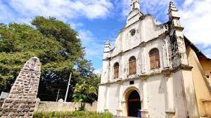
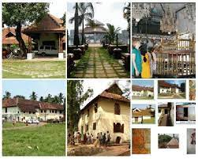
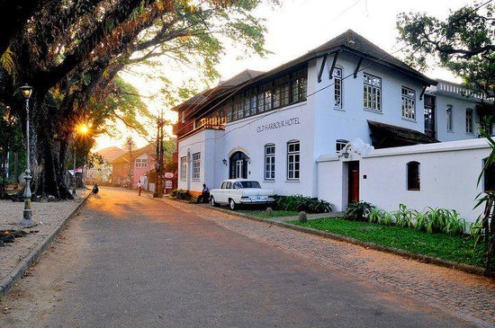
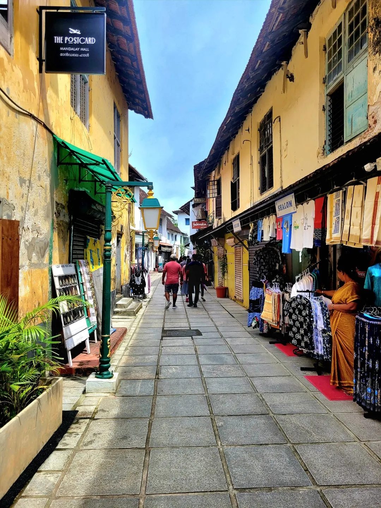

Fort Kochi, the western part of the Kochi city of Ernakulam district in Kerala. It is about 12 km away from Ernakulam Town. Fort Kochi has played an important role in the history of Kerala. Fort Kochi also has several attractions like the Santa Cruz Basilica. Fort Kochi also houses many historical monuments such as the St. Francis Church, the first church of Vasco da Gama, the Dutch Seminary, the China Vela and many others. The Indian Navy’s ship, Dronacharya, is located in Fort Kochi. The Mattancherry Palace is close by. Fort Kochi was the first European township in Kerala. The Fort Kochi carnival celebrates New Year’s Eve every year. Thousands of people come to visit this carnival. The car rides and other festive events are also part of the carnival. Click here to know more.
My Hometown have several exciting attractions for tourists to enjoy, including:
Here are some images of our beautiful hometown and its attractions:
   